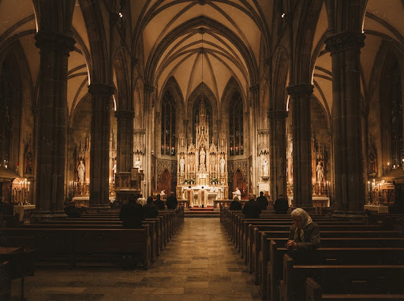
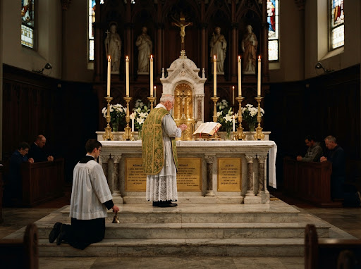
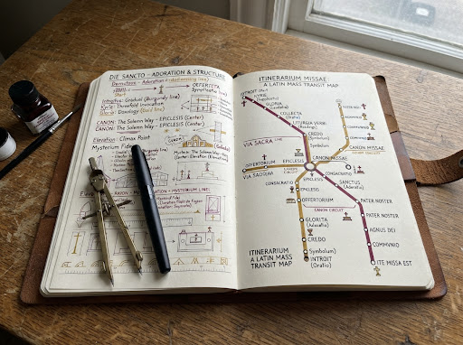

Origin Story
Toronto, Ontario · Early 2010s – present
It began on a frigid November morning when I first stepped beneath the limestone arches of an old parish in downtown Toronto. The scent of seasoned beeswax and century-old incense hung dense in the air, filtered through the morning sun that slanted high across the clerestory. I was not raised in this liturgical tradition, nor had I ever heard the Roman Canon whispered behind the altar rails. Yet as the priest climbed the altar steps and the choir concluded the opening chant, an unexpected gravity settled over the nave. The silence was not empty; it was filled with prayer that had echoed across continents and centuries without rupture.
Within months of attending regularly, the parish suffered a quiet loss: the veteran altar server, a gentle octogenarian who had served the early Sunday Mass for forty-two years, passed away peacefully in his sleep. The pastor posted an appeal in the vestry for volunteers. Knowing only scraps of High School Latin and feeling entirely unequal to the solemnity of the sanctuary, I nonetheless offered my hands. The training was quiet, exacting, and conducted mostly on cold marble steps before dawn, where every genuflection, head-bow, and bell-ring was timed to the secret rhythm of the celebrant’s whispered prayers.
Learning Ecclesiastical Latin ceased to be an academic pursuit; it became a bodily imperative. Memorizing the Confiteor and the responses to the Introibo ad altare Dei required re-tuning my tongue to antique vowels and cadence. I spent evenings with dog-eared grammar notebooks, reciting server dialogues until the responses flowed with instinctive reverence. It was during these quiet drills that I realized Latin was not a barrier erected between the faithful and the altar, but an acoustic vault that sheltered sacred mysteries from the mutability of everyday conversation.
Yet for all this preparation, standing at the foot of the altar during my first Low Mass (Missa Lecta) was a disorienting trial. Unlike the sung High Mass whose chants announce each transition across the nave, the Low Mass unfolds in an unbroken, profound hush. The priest turned pages without audible ceremony; the bell rang at intervals that felt sudden unless you were scrutinizing the angle of his shoulders or the whisper of his chasuble. In the pews, newcomers and even lifelong worshippers repeatedly fumbled through thick 1,800-page hand missals, leafing through multiple silk ribbons trying desperately to reconcile where the priest was with the text before them.

The disorientation was not spiritual—it was architectural. The traditional liturgy is not a linear book to be read cover-to-cover; it is a multi-branching topography. There is an immutable backbone: the Ordinarium Missae, accompanied by shifting junctions where the Proprium of the day (Introit, Collect, Epistle, Gospel, Secret, Postcommunion) docks seamlessly according to the liturgical calendar. When you lose your place during the silent Canon, turning fifty pages back and forth under dim stained glass feels like searching for an exit without a schematic map.

One evening at my drafting desk, while staring at Harry Beck’s iconic 1931 London Underground map alongside an open copy of the 1962 Roman Missal, the epiphany snapped into focus. Liturgical rites have stations, interchanges, and terminal points. The Mass of the Catechumens is an ascending transit line running from the foot of the altar through the Gloria and Gospel; the Offertory is a transfer station into the solemn ring of the Mass of the Faithful; and the Canon is an unbroken arterial route culminating at the Consummatum and Communion. If transit systems could render complex spatial networks into intuitive topological schematics, the ancient liturgy deserved no less.
I resolved to design SanctissiMissa not as another digital book with paginated faux-leather covers, but as a living transit map of holy time. Latin remains the sovereign normative rail, with vernacular English providing a modular sidecar. Every station on the map—from the initial Judica me to the Last Gospel of St. John—is an interactive node leading into the authoritative text. Whether you are an experienced altar server kneeling in the sanctuary or an inquisitive seeker stepping into the quiet nave for the first time, you are never lost: you can trace exactly where you stand in the timeless procession of the Mass.